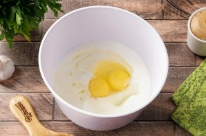
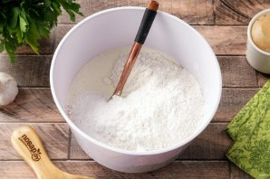
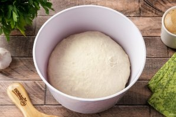
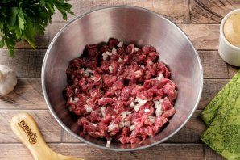
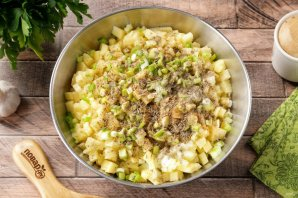
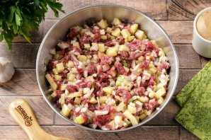
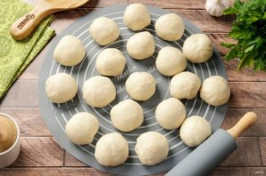
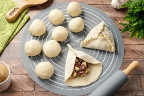
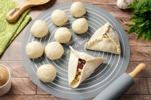

Подготовьте все ингредиенты по списку. Для начинки можно использовать любое мясо — говядину, гуся, утку или курицу, добавив в начинку для пикантности черный перец и любые приправы по вкусу. Кстати, подмороженное мясо режется проще и быстрее.

Для теста соедините кефир, сметану, яйцо, один желток, 3 ст.л. растительного масла, соль и сахар. Перемешайте.

Добавьте примерно 500 грамм муки, разрыхлитель и крахмал. Сначала перемешайте всё ложкой, а потом подсыпая оставшуюся муку, продолжите замешивать тесто руками.

Тесто должно быть мягкое и эластичное, не липнущее к рукам. Соберите его в шар, накройте полотенцем и дайте полежать 20-30 минут.

Приготовим начинку. Мясо нарежьте небольшими кубиками. Желательно использовать мясо с жирком.

Картофель нарежьте кубиками чуть поменьше, а лук желательно нарезать максимально мелко, насколько это возможно. Зелёный лук промойте, обсушите и так же порубите ножом. Добавьте к начинке 1 ст.л. растительного масла, соль, молотый чёрный перец и любимые специи по вкусу.

Хорошо всё перемешайте. Начинка готова.

Отдохнувшее тесто разделите на кусочки. Каждый кусочек теста — это один эчпочмак. Но предварительно кусочки теста нужно взвесить, один кусочек должен весить около 70 грамм.

Каждый кусочек раскатайте в круг, размером с чайное блюдце (рабочую поверхность в процессе посыпайте слегка мукой) и выложите начинку. На один эчпочмак идёт по весу примерно столько же начинки, сколько весит кусочек теста. Сформируйте треугольник.

Края круга в трёх местах соедините вверху, как пирамиду. Защипивайте таким образом, чтобы осталось небольшое отверстие по центру.
Швы тщательно защипните "косичкой" или "верёвочкой", иначе в процессе выпечки пирожки могут развалиться.
Переложите заготовки на противень. Противень можно смазать маслом или присыпать мукой, у меня специальный коврик.
В середину эчпочмака заливаем растопленное сливочное масло или топленое. Поверхность смажьте желтком. Сливочное масло можно заменить на бульон или положить в отверстие кусочек сала.
Выпекайте в духовке при температуре 180 градусов 40 минут. Не пересушите. Если у вас мясо суховатое, то минут через 30, когда эчпочмаки приобретут золотисто-румяный цвет, нужно их достать и в отверстие «пирамидок» влить ещё по 1–2 ч. л. растопленного масла или насыщенного мясного бульона. Далее пирожки выпекайте до готовности.
Эчпочмаки без дрожжей готовы. Как только выпечка станет тёплой, сразу подавайте к столу.
Это очень вкусно! Приятного аппетита!